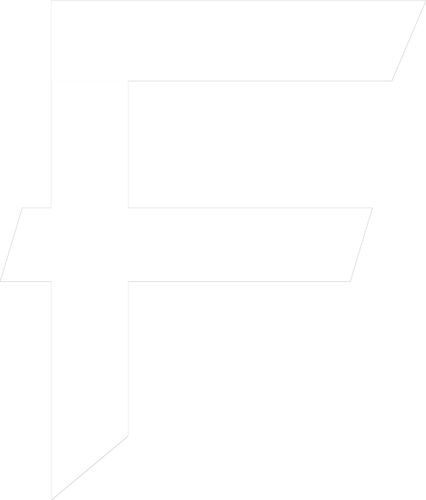

All Team Fortress 2 songs , remixed in metal, are now out! Get it here:
Also available on Facebook/Instagram, Tiktok, Yandex, Xiami, Uma, Tencent, Pandora, and NetEase, provided by Soundrop
Full playlist on Youtube
iTunes/Apple Spotify Deezer Amazon Music Youtube MusicOpen the music discography
Open the full video list
Open the gear list
Frequently asked Question that I often read in the comment section. Here are the answers!
What was your first instrument?
I started with piano lessons back in 2003 until 2009. My next instrument was bass, which I started Sept. 2009. A year later I started with guitar. My way of becoming better in guitar: grinding to learn "The Canon Rock" by Mattrach.
In 2013, I bought several instruments like Ocarina, Melodica, Harmonica. In 2014, I found an accordion in the waste so I thought, I'd give it a try. In the same year, I also bought a cheap violin on ebay, which was totally fine for learning. I stopped playing it.
I started learning drums in 2016 but only learned the basics, as I mainly play simple dubstep patterns. In 2018, I bought a bagpipe chanter, the bag I bought with it was really bad unfortunately.
In 2019, I bought a launchpad pro and played a lot of piano, sampling etc. with it. In 2020, I bought a trumpet for the Fallen Soldier song but after that, I did not touch it furthermore, as I find trumpet extremly hard.
I looked up Renoise and it's hella confusing. Why did you switch from Reaper to Renoise?
Don't worry, I was confused as hell too. In fact, I was just browsing and searching DAWs for Linux. Someone in YT comments mentioned Renoise and I was curious about its look. I downloaded the demo and tried to play a bit around with it but without success. However that step repeated several times, I was bored so I launched renoise, played around, closed. After a while, writing real songs with it and using its powerful sampler, it became such an addiction: It was just something different than I knew from traditional DAWs; that's what makes it fun for me.
I am neither Tracker only, nor traditional DAW. I still use Reaper for advanced audio editing or as a rendering tool. However Renoise (I speak of renoise, not other trackers) has some major advantages for me that makes me stay:
- Keyboard driven - I often work on the go, in the car, etc. so making music without using a mouse is the ultimate team play. Writing MIDI notes per keyboard is a quick workflow.
- No Plugin independency - Every project and instrument samples are built into one file. No need to worry about missing VSTs.
- Sampler is very good, extremly versatile and I like that it's the main feature of trackers. Possibilites are endless.
- The renoise team are man of honours: License is not expensive and can be installed on any of your machines as long as you keep it to you.
- OOP vibes: You can save phrases (phrases are a bunch of notes and commands), reusing them in a creative way like drumming, chording etc. With the help of chord modes, you can then turn any chords saved as a phrase into the specific chord you need etc.
- All instruments in one folder - No need to browse between plugins for a specific sound. Easy backup - Easy rewind of older projects checking the mixing and instruments there
- Customizable with extensions, keybindings + themes
- Many built-in FX right into Renoise using FX section and its hexadecimal values. (steep learning curve but it's worth)
- Song structured in pattern - Structure Intro, Chorus, Refrain into a group matrix (basically blocks like in Minecraft), repeat sections easily, name them easily.
- Recording guitar or audio in general seems a bit tricky at first but since, everything is structured in patterns, recordings will be perfectly cut within patterns, so this makes practicing and recording one specific part in your song pretty easy too.
For sure, there are always disadvantages too: If you are mainly producing music by recording whole audio stems, then Renoise can work but might not be something for one. Its main feature is the sampler, which means whole recordings are being put into a sampler as well. This will make renoise look very empty and you sometimes don't know, where your trigger MIDI notes are. If you want to try but you are more of an audio-recording guy/girl, then the Renoise approach would be to record small chunks and parts of your song, for example like the intro riff with four chords, then repeating these 4 chords into one sample and play it back, instead of traditionally recording the whole intro completely.
Everything about samples - Where I get them, what I use, how I use
I collect and hoard samples for quite a while now, so it evolved into a huge library. The first samples I used were in 2016, where a friend of mine told me about using drum samples instead of a drum VST. I started to like this way more and more because of the flexibility, that I sold my trustworth EZDrummer and started collecting drum samples first.
Later, when joined the dubstep gang, I also started to dubstep growls as well. In 2018 I also started to sample guitar too. Since then, my rhythm guitar became 90% sampled. It was at a time, where I was highly unhappy about my guitar tone and mixing - so I thought samples would guarantee a static steady sound. My bass was replaced with a synthesizer then, but later in 2020, I bought Kraken and sampled that one as ready-to-mix samples. I think, I will never go back to a real bass too, my songs are being played very low anyway, so it is not worth the hassle (and the string).
In 2021 I started sampling anything. As I said in the Renoise tab above, I wanted to experiment with samples more but Reaper is mainly a linear editing DAw, sampling takes longer to setup in my opinion. Now I go from selfmade sounds to random sounds, free sounds, sounds made by synths and resampled and the list goes on. I am quite impressed by how versatile this can quite get. Adding effects and especially modulation is super fun right now, which makes me quite tinkering aroudn with sounds and design. The small filesize is a very welcome side effect for me as well. Sometimes, when on sale, I buy samples mostly at Ghosthack, Cymatics and (rarely) Splice. They often contain vocal chops, drums/percussion, Foley FX, SFX, drumloops and dubstep growls/wobbles. I mostly enjoy using drumloops, since you can do a lot with that. I either use them to chop up the parts and rearrange them or, one of my favourite effect, I simulate a Halftime effect in Renoise. The original plugin Halftime takes a samples and plays it back on a lower pitch - therefore when lowered the pitch, it becomes twice the length. When playing the sample on lower note, I use the Sxx effect in the FX column to trigger a certain part in the sample. If you go S20, S40, S60, S80 and so on and playing the sample one octave down, you are achieving the same effect from Halftime but instead, you can go more flexibel with that setting your prefered playback position Sxx whereever and however you want. This also works with whole phrases of melodies beign put in a sample and I love the creativity there so much.
As original metal head, why did you start learning electronic music?
Well, I didn't like EDM at first but since Skrillex joined the dubstep game in 2011, I immediately loved this music. My first impression was like this is the next electronical metal pendant. Was surprised how many people still dislike it. However, in 2012 I still focused on getting good on guitar so learning the basics of EDM and getting into dubstep was a slow process starting in 2015 using Massive, later Serum. Since Youtube was still my main focus, the progress happened stepwise, partly very bad mixing and progress. In 2017 I finally made my first dubstep real dubstep song "Genva" and I was extremly happy about that - therefore I extended my knowledge in EDM in general as much as I could but also taking care of my old influences.
Nowadays it is important for me to still keep the roots of metal and rock music, perhaps some real instruments and put it together with EDM music. This required a lot of new knowledge - the mixing is different, synths are way louder than instruments and guitar can not be compressed as much as a saw wave. If I make a new metal cover, I mostly prefer including dubstep/riddim typcial elements in it, from 150bpm, half time drums to chuggy palm-mutes and wobble-like patterns - in metal. Voilà, that's it, my new style! Will it change in the future? Perhaps - Mostly every musician is making changes and fans will like or hate it - but that's completely fine. :]
Why did you primarly focus on video game music instead of generic music covers or even own music?
I listen to videogame music and "normal" music both so it's not that reason. But I think, the main reason was that back in the days, there were covers of anything but rarely of video games. When I ended up seeing people like CSGuitar and FamilyJules mainly focussing on videogame music, I said to myself, I want to start recording too.
I also prefered to stay in that niche so I rarely did anything beside videogame music, especially not on my main channel. A year ago, I finally managed to seperate video game music and other music into my second channel > Metal Fortress #NoVGM ; check it out, if you like!
Speaking of original music, it's a complicated topic. Back in the days, when I started with Youtube, I did not even think about making original music, as I thought, it would sound bad anyway. I only did it due to a teacher at my school asking me composing two songs for a film about chickens in mass stocks - a happy for a better life of the chickens and sad theme about that bad industrial livestock situation. The sad theme was really bad and I have never uploaded it but the happy theme was uploaded on my first soloalbum called Farmer's song.
Anyway, making original music is fun and I would do much more of it. However, due to video game music, I can not really focus on one genre basically, since VGM taught me liking more. If you look up my spotify page, I have plenty of original music but there are many in different genres as well. In the future, I would end up either as ghost producer for other artists and projects or just continung uploading random songs - I don't know yet.
Where are your older instruments?
My first Ibanez from the first videos had an issue with the Floyd Rose and its electronics. It also was my first guitar and I did not know nothing about a Floyd Rose before and never really enjoyed it so I decided to sell it over ebay around summer 2016. Ended up driving to a motorway service area and sold it there.
The Schecter 8 string had a similar problem with the electronics. It began to loose gain and power and the sound got very thin and not enjoyable on the high strings. Since I never really enjoyed the fretboard as well, I decided to sell it too in summer 2017.
The Harley Benton HBZ bass just never fit into my music style so I sold it.
My Epiphone Jumbo guitar still exists but I borrowed it to my sister.
What is your usual guitar tuning?
My usual tuning is Drop C (CGCFAD).
For rhythm guitar I prefer drop A or F#. For F# I use an 8 string kit. In some older covers, I used Drop B and Bflat as well. Standard tuning never occured in my videos as far as I can tell.
How many instruments can you play?
On a intermediate/pro level I play: guitar, bass, piano/keyboard, accordion.
More instruments with just basic knowledge are: ocarina, harmonica, launchpad, violin, trumpet, bagpipe chanter;
Do you play with a guitar pick?
No, on an electric guitar, I don't play with a guitar pick. The reason is very simple: When I started learning guitar, I was imagining me playing on stage and thinking of the scenario that you could lose your guitar pick while being on stage has scared me so much, that I invented my pickingless technique. Before you also get the fear of loosing your guitar pick, keep in mind that a guitar pick still helps you to sweep and shred much better so I don't recommend this at all, if you are going to play fast songs.
Do you make guitar tabs?
No I usually don't. The 3-4 guitar tab videos were a "little" special for subscribers but I was struggling a lot making these videos, especially that I also play my guitar usually on Drop C or other uncommon tunings. The only thing I always can provide are MIDI notations from newer songs at around 2019. I have some of these MIDI files in my free download catalogue on GDrive but not all. Just leave a comment under the specific video and I will take a look at my project list, if you are interested.
Also if you are looking for Team Fortress 2 sheets, Valve has officially shared the original sheets for free. Check out their official website (on the right sidebar).
The request I have been submitting is still not there. What about requestfest now? Did you quit?
The list I have received so far are over 300 requests now. It's obvious, that I can not make them all, especially now I have another fulltime job so I can not take the time to make very exclusive requests for now (rare, complicated, less-known songs etc.) I am still going to pick some here and there and I also observe the list closely on how many people requested what. For example, there are a lot of Terraria requests so it would be a good idea to sum them up and make an album/medley ouf of it. Speaking of medley, requestfest medley would be another option to make more random requests at once but I want to make sure first that the song choice and transitions are fitting.
Do you still play Team Fortress 2?
It became less unfortunately. I was more enjoying cool servers around the time in 2012. They are being shut down for longer and now and since then, I did not play it regularly. After the Jungle Update, I used to play and grind a bit of the Casual Mode for a better medal but that's it. Since then, it's always sometimes, like once every 1-2 months - sometimes longer. I just want cool community servers back: The one I played the most were saigns.de . They had a server for each map, extended round time, random voice line effects, some funny premium stuff, that you could use for 15 minutes for free daily. I remember also servers running Orange maps for a long time as well. A church in Orange map style - funny custom voice lines and skins. Dispenser who could shot rockets, quick sentry building, etc. etc. All gone. There still might be servers around having similar settings but the playerbase is also not the same anymore. Oh not to forget the bots.
My current favourite game changed to Forza Horizon series: I joined in December 2019 with the 4th game. Since then I play frequently and sometimes daily. They offer weekly new challenges and collection items, which I missed in Team Fortress 2 for longer now. Remember when in TF2, a new update came out more often and you were eager to play a lot so you could get the item perhaps for free or you just crafted it yourself? The only thing the TF2 community wishes is a dev team, who cares more about TF2 again. The best thing of this game is the community. Every "normal" game would have been dead after such a lean period but TF2 still is strong in its playerbase, which makes me glad to see. I hope Team Fortress 2 can be saved, cuz even a strong playerbase like this can fall apart.
Did you make this website yourself?
Yes! I learned webdesign when I was 11 years old but I only focused on HTML4 (back then :] ) and CSS. Website like this one though is super easy to make so it's no witchcraft. Later on, after I did not find any music related job around my home town, I decided to get better in IT. I started with a java certificate and now I also going to learn IT administration in form of an apprenticeship as well. I have knowledge HTML/CSS/JS + Java but my completely lifestyle consists of minimalism, meaning I mainly prefer lightweight languages now, my future plans are learning more of Python, Nim, Lua and Godot + GDScript. Like with video games nostalgia, I also miss the old times of Web 2.0, remember the old YT design or Amazon; that's why my website does not look like the modern standard you might expect.
What happened to your Twitter/Instagram? Why are you not active on Social Media (anymore)?
The old subscribers from 2012 might remember my enthusiasm, when I was young and swifty. Over time, I became more of a calm bloke. Same with social media. I don't feel like sharing my life over the internet anymore, so it became a lot quiet over time. The "perfect world" on Twitter/Instagram makes me a bit sad and in the former case, I see a lot of malevolence that makes very unmotivated producing new content so I decided to slowly get away from social media and messengers.
How can I support you?
It is important for me, that the main thing - the music, stays free for everyone. If you want to support passively, you can do that by streaming my music on Spotify! Another way would be watching my youtube videos or hit the like button. If you really want to give some small tip you can do that by either buying my music on Amazon Music, iTunes etc. and if you persist of not getting something in return, you can do that on PayPal. I am not much a fan of the last option because I can not thank you for that. All the people, who already used this option: A big Dankeschön!
Other things like tips, etc. will be posted here now. That's why I won't set up a Patreon. I always look up for free tutorials, so I give mine back too :D
When Predator Remix?
The Predator remix is a highly controversial request by duckfaced Heavy from TF2, who ignores any given content of Metal Fortress videos and urgently persists of a remix from the Arnold Schwarzeneggers film OST where the creator of MF's channel not even know the exact song even though by asking several times to the petulant Heavy, who probably is just mad and impatient due to no Sandvich in his refrigerator.
Why is this series called "Final Remix"? Does that mean, you will never do TF2 covers again?
No, I will still make TF2 songs in the future. The Final Remix series just means, that it should be a projekt of doing every song from TF2 in this particular style. That means, if Valve adds new official soundtracks, I will add them too in this style. However, in the future, I will definitely make new TF2 covers to try various music styles, for example in synthwave, accordion or a real DOOM style? TF2 is just too good to quit it right now. We are going to live forever, right?
Story behind TF2
and this channel.
In 2011 I got introduced by the first video game cover artists such as Jules, CSGuitar or TheDelRe and it was mostly about the retro games, which is still a thing for me and what got me into covering music. But since August 2011, I also started playing TF2 and it became my favourite game really quick mostly because of the funny community. I only got in contact to this game because friends told me about it. In this year, TF2 became F2P and was in various game magazine and the reason why I wanted to try it out is because you can change classes at any time and I liked Engineer bulding sentries and being lazy. It was also my first steam game and the reason I came in contact with it. Also funny, I accidentally might have never tried TF2 out because download size of 9gb was extrem huge for my internet back then. I hit the download on a friday afternoon and didn't notice Steam was always starting automatically in the background. At Sunday night, I noticed the download was finished so I was finally able to play! My first map was btw cp_gorge and Engineer was my first choice.
Is there something new we can expect from your TF2 album?
For most of you, the whole album release isn't something completely new, if you listened to my Youtube releases. The songs you hear in the album have gone through another mastering process and I enhanced some parts that might have been glitchy in the videos. The biggest changes were removing the voice samples from the Main Theme, Faster Than A Speeding Bullet, Right Behind You, Intruder Alert and MEDIC! as people wished that and I couldn't do it anyway because you need a copyright agreement from the original voice actors.
I also couldn't add the Saxxy 2011 theme as this isn't a part of the original album called "Fight Songs: The music of TF2". It's not included there and you can only license songs from original albums, that are published in the US, which is the case here. I left out the song "Carousel of Curses" which is basically only an extract of Misfortune Teller so I decided to not put it in there. I also couldn't add Saluting The Fallen because it's not included there either and I guess, it won't ever come, as its origin is from another song. As replacement, I added an extended mix of the Rocket Jump Waltz orchestral version. Meaning also please keep in mind that unofficial songs like the Square Dance, Upgrade Station and more will likely stay as YT releaae as there are not part of an official album release yet. Thanks for understanding!
Do you have tabs? / The tabs in your Google Drive are missing some?
I didn't make any tabs (except for a few), as I am not really good into it and I don't have such software like Guitar Pro as I prefer MIDI. However, do you know, that Valve offers sheet music of any TF2 songs for free? You can grab it from their official website (on the right side)
| General: | (Updated: 29.07.2022) |
| name: | Karim |
| born: | Germany |
| age: | 25 |
| height: | 189cm / 6.2 ft |
| hobbies: | cycling, music, computers, video games |
| languages: | german, english, french |
| studied: | Java Programming |
| currently: | apprenticeship as IT specialist - system integration |
| Favorite: | (Updated: 17.06.2022) |
| guitar: | Jim Root Telecaster |
| band: | Currently: First of Eleven |
| guitarist: | Mattrach |
| producer: | Virtual Riot |
| pianist: | Tom Brier |
| song: | Currently: Holiday - First of Eleven (Greenday) |
| VGM guitarist: | GaMetal |
| VGM mate: | Dethraxx |
| VGM song: | Currently: Spiral Mountain (Banjo Kazooie) |
| VGM composer: | Grant Kirkhope |
| instrument: | MIDI Keyboard |
| own song: | Hopeful |
| TF2 char: | Engineer |
| TF2 map: | Frontier |
| TF2 song: | RED Triumphs! |
| food and drink: | Chili Con Carne + Ice Tea |
Tutorials
Tutorial: Guitar Tones Tutorial: Mixing & Mastering Tutorial: Video Editing
Links to everything
Youtube Channel Spotify Soundcloud Deviantart Download Samples Download MP3 Discord Github Webseite Sourcecode on Github
Recommend Youtube channels
Metal Fortress #NoVGM Dethraxx GaMetal Gabocarina96 Ro Panuganti Aaron F. Bianchi Jupiter Atheræth Khan Dann Link Nivan Sharma Monti64